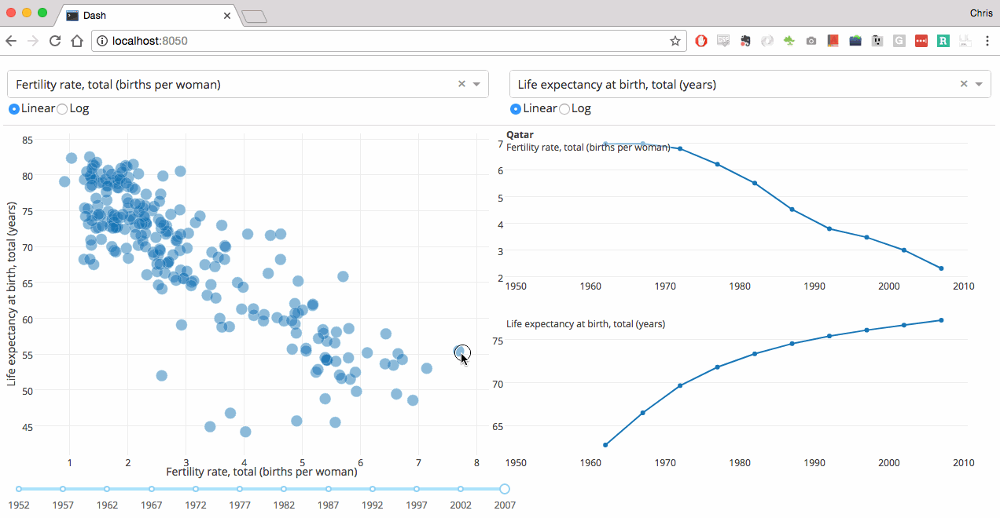

Creation of Storyboard: Mapping of Visualizations
Designing multiple views to tell a story across graphs using Tableau, Excel, and Jupyter.
Project Purpose
Enable deeper understanding of datasets by using visual mapping strategies to guide the viewer through meaningful steps and conclusions.
Visualization Tools
- Tableau
- Microsoft Excel
- Python + Jupyter Notebooks
- Google Collab
Development Process
- Explore dataset structure
- Identify insight opportunities
- Select best graphs for each story point
- Create visual progression with annotations
Story Gallery
Linked views in Tableau storyboard

Python-based custom visuals